Se formó hace aproximadamente 4600 millones de años a partir del colapso gravitacional de la materia dentro de una región de una gran nube molecular. La mayor parte de esta materia se acumuló en el centro, mientras que el resto se aplanó en un disco en órbita que se convirtió en el sistema solar. La masa central se volvió cada vez más densa y caliente, dando lugar con el tiempo al inicio de la fusión nuclear en su núcleo. Se cree que casi todas las estrellas se forman por este proceso. El Sol es más o menos de edad intermedia y no ha cambiado drásticamente desde hace más de cuatro mil millones de años, y seguirá siendo bastante estable durante otros cinco mil millones de años más. Sin embargo, después de que la fusión del hidrógeno en su núcleo se haya detenido, el Sol sufrirá cambios importantes y se convertirá en una gigante roja. Se estima que el Sol se volverá lo suficientemente grande como para engullir las órbitas actuales de Mercurio, Venus y posiblemente la Tierra.
Se formó hace aproximadamente 4600 millones de años a partir del colapso gravitacional de la materia dentro de una región de una gran nube molecular. La mayor parte de esta materia se acumuló en el centro, mientras que el resto se aplanó en un disco en órbita que se convirtió en el sistema solar. La masa central se volvió cada vez más densa y caliente, dando lugar con el tiempo al inicio de la fusión nuclear en su núcleo. Se cree que casi todas las estrellas se forman por este proceso. El Sol es más o menos de edad intermedia y no ha cambiado drásticamente desde hace más de cuatro mil millones de años, y seguirá siendo bastante estable durante otros cinco mil millones de años más. Sin embargo, después de que la fusión del hidrógeno en su núcleo se haya detenido, el Sol sufrirá cambios importantes y se convertirá en una gigante roja. Se estima que el Sol se volverá lo suficientemente grande como para engullir las órbitas actuales de Mercurio, Venus y posiblemente la Tierra.
Galeria
 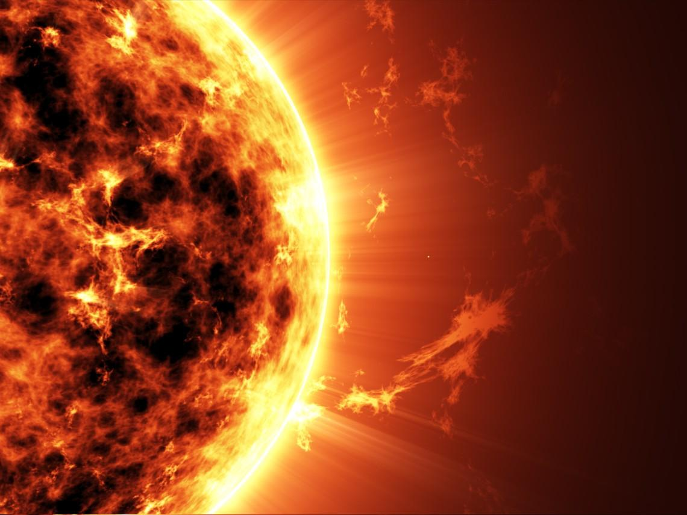
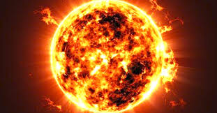
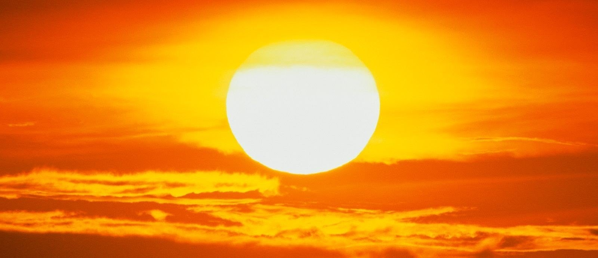
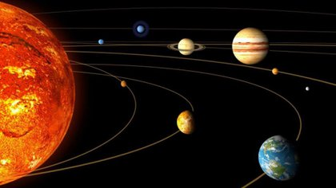
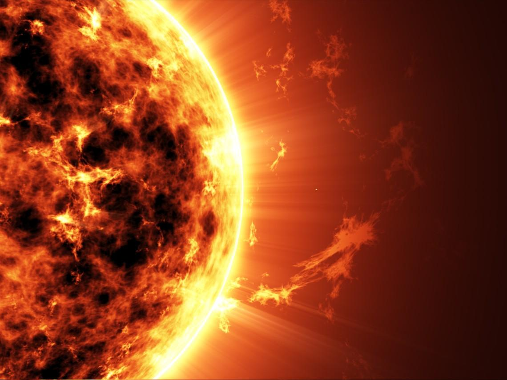
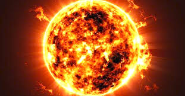
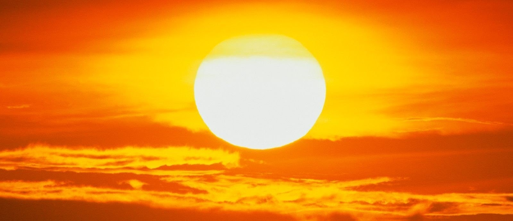
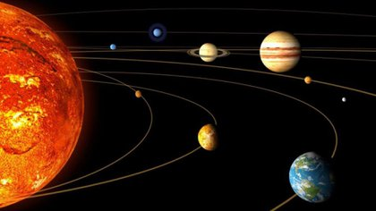
 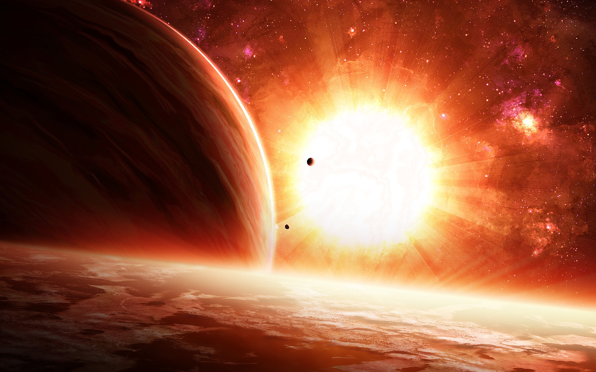
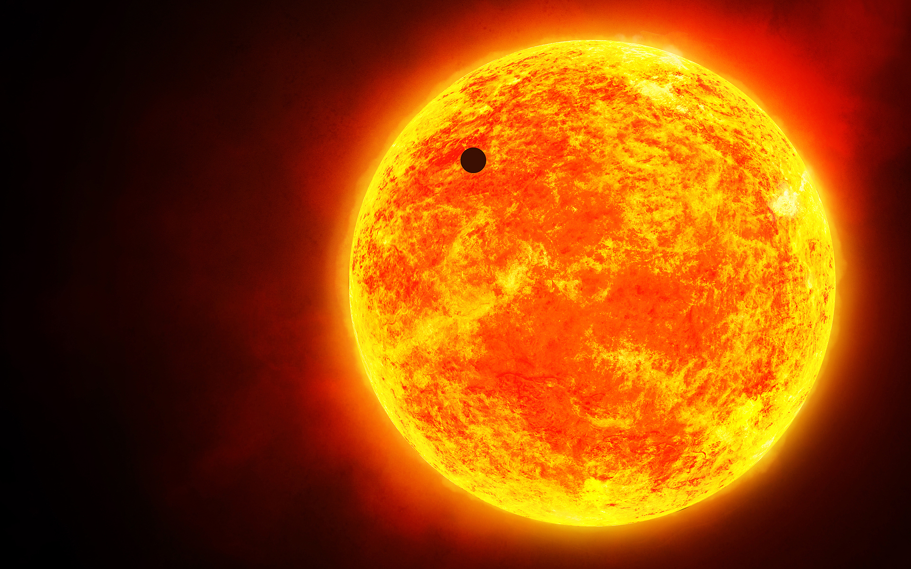
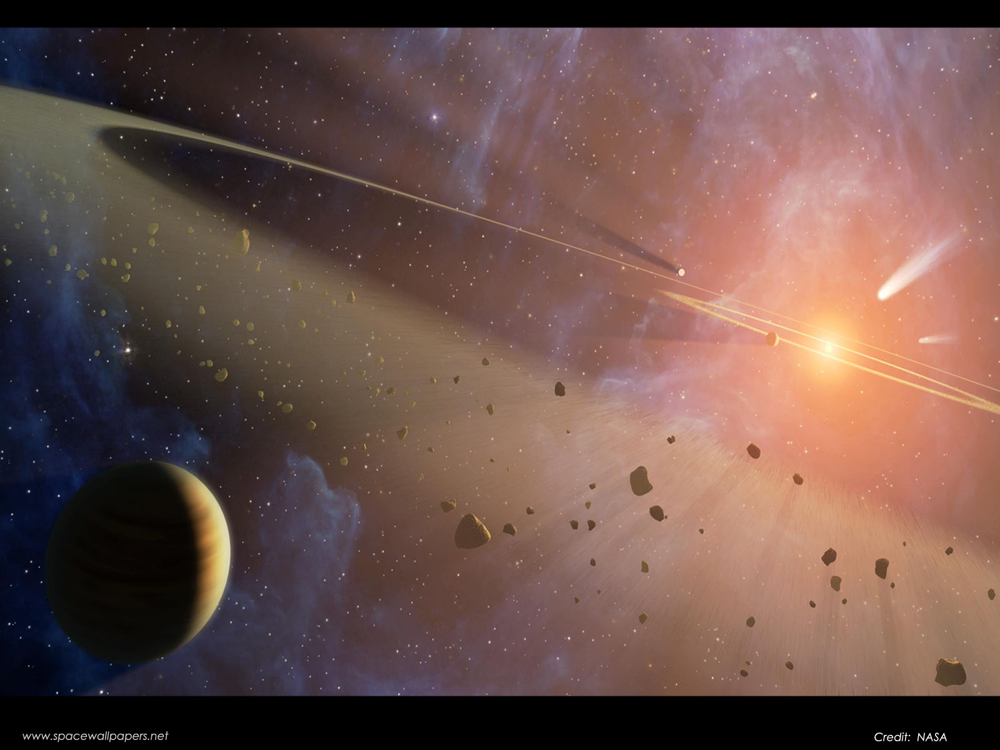
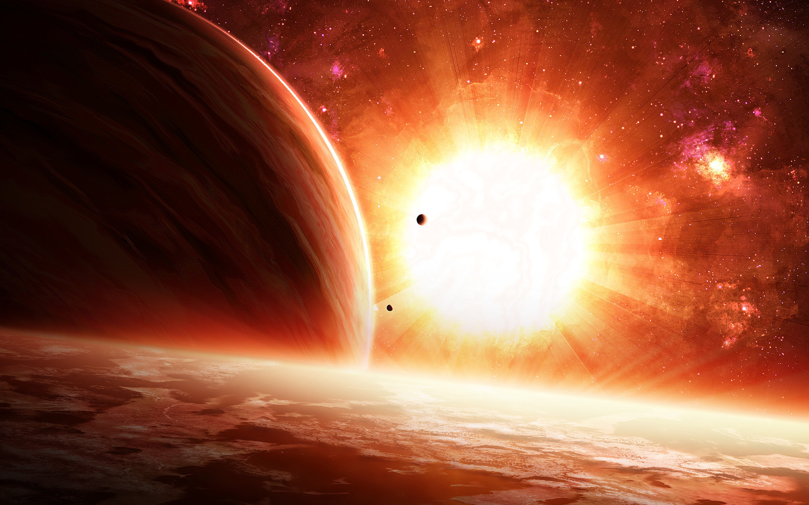
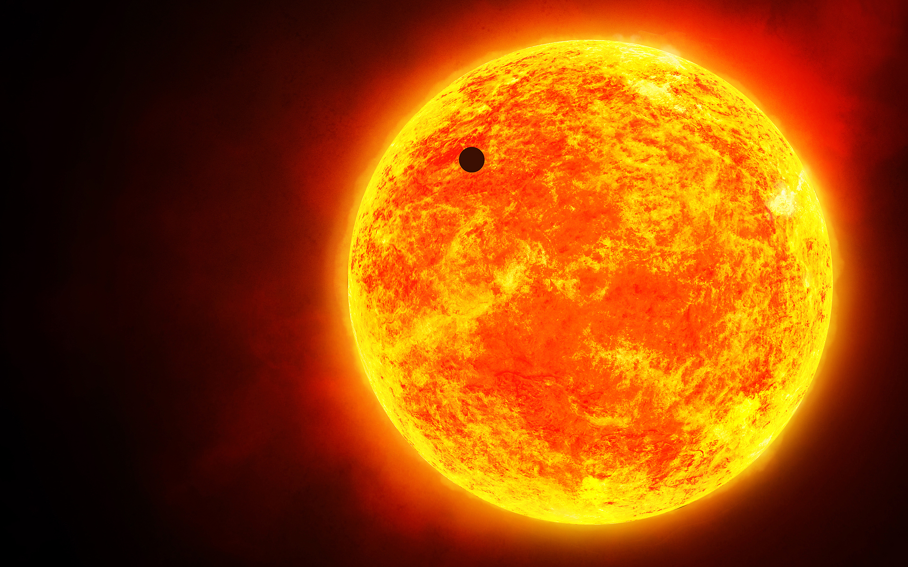
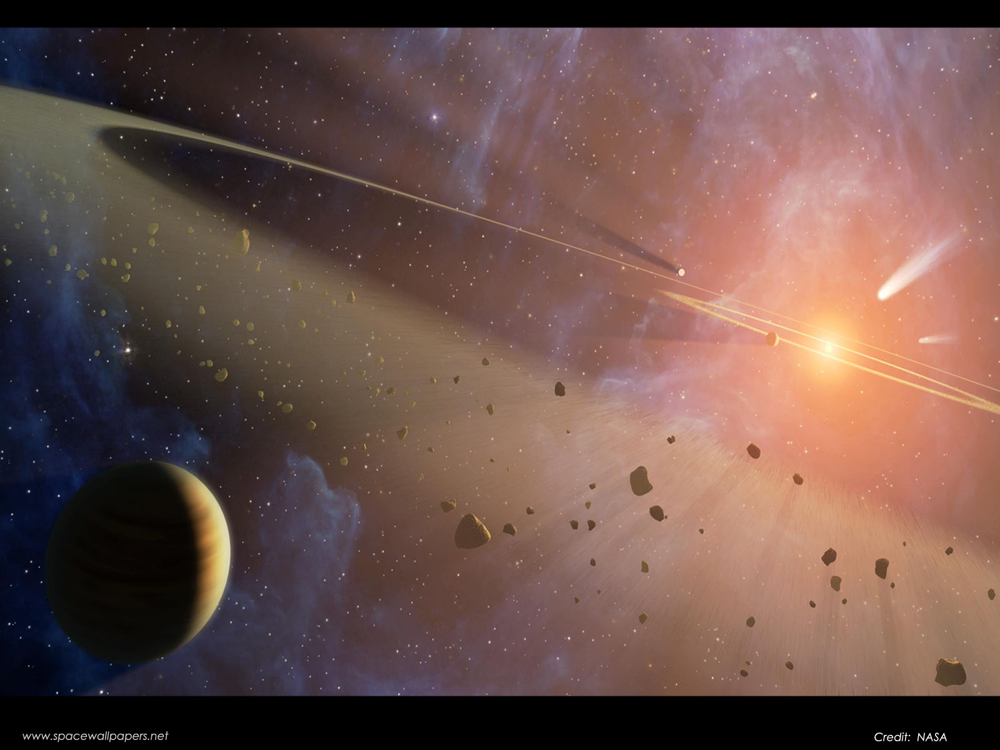